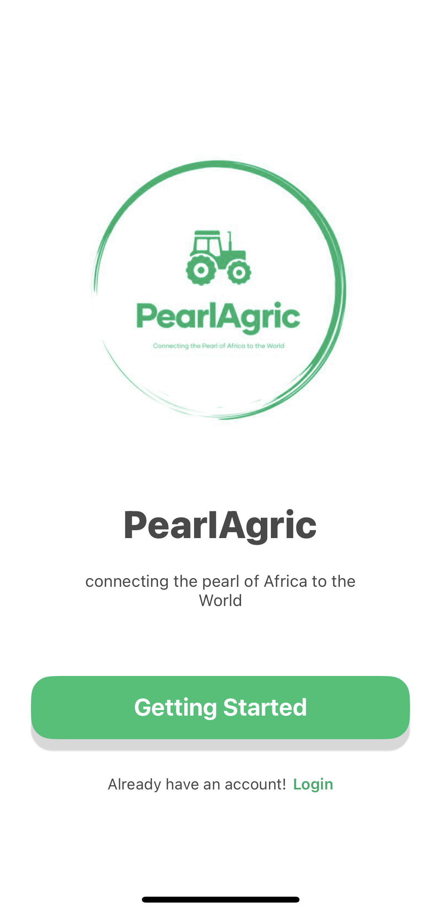
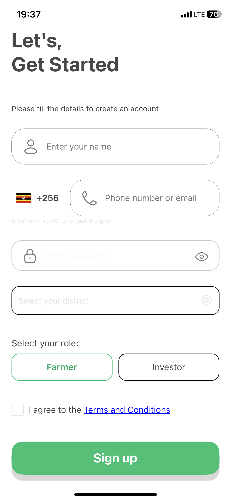
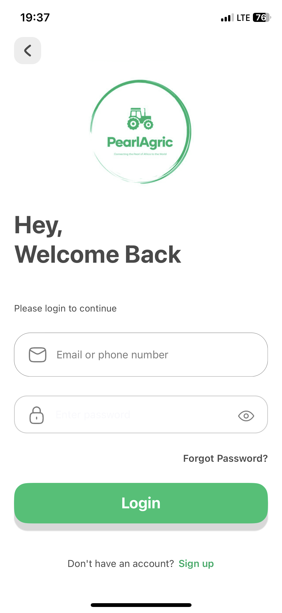
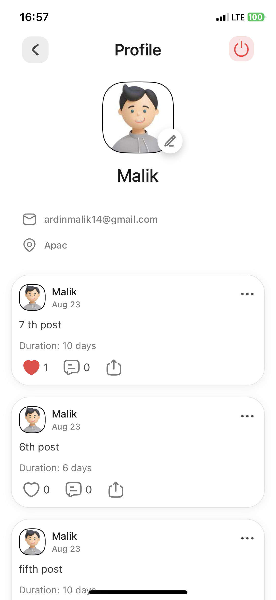
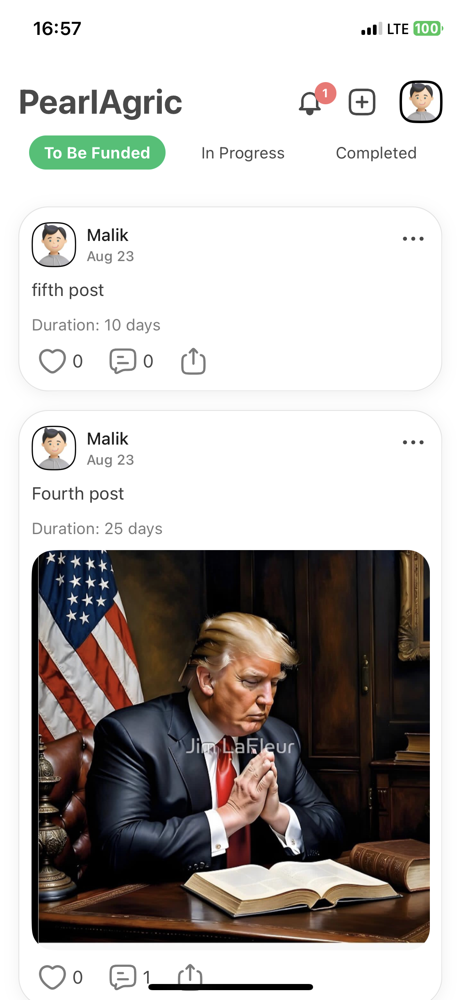
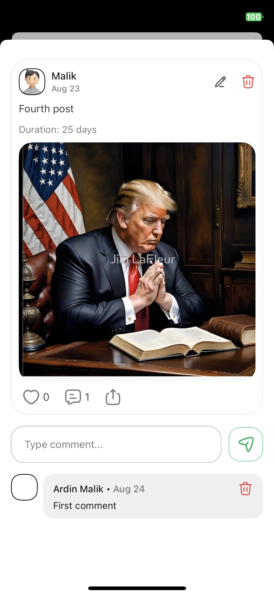

Get the App
Download PearlAgric
Available soon on iOS and Android. Join Uganda's agricultural investment community.
PearlAgric bridges farmers seeking funding with investors looking for real agricultural returns — transparently, securely, and entirely on your phone.
The Process
From project listing to profit return — every step is tracked on the platform.
Verified farmers list agricultural projects with funding goals, expected returns, timelines, and detailed descriptions.
Investors explore verified opportunities filtered by category, tags, and project stage — then commit funding directly in the app.
As the project progresses, farmers post real-time updates — photos, videos, milestones — keeping investors informed.
Returns are logged transparently. Investors see their portfolio, ROI, and payout history all in one dashboard.
Why PearlAgric
Every feature is designed to build confidence between farmers and investors.
Farmers go through a verification process. Investors can filter to see only verified listings — giving confidence before committing funds.
Browse projects like a feed — with photos, videos, rich descriptions, likes, and comments. Stay engaged with projects you care about.
Get instant notifications when a project you invested in posts an update, reaches a milestone, or logs a return payment.
Track total invested, active projects, completed returns, and ROI — all in a clean, at-a-glance dashboard built for investors.
Farmers link mobile money or bank accounts. Payments and payouts work the way Ugandans already do business.
From Kampala to Karamoja — all 128 districts of Uganda are supported, with local phone numbers and familiar payment rails.
App Preview
A clean, intuitive experience built for farmers and investors on the go.






Get the App
Available soon on iOS and Android. Join Uganda's agricultural investment community.